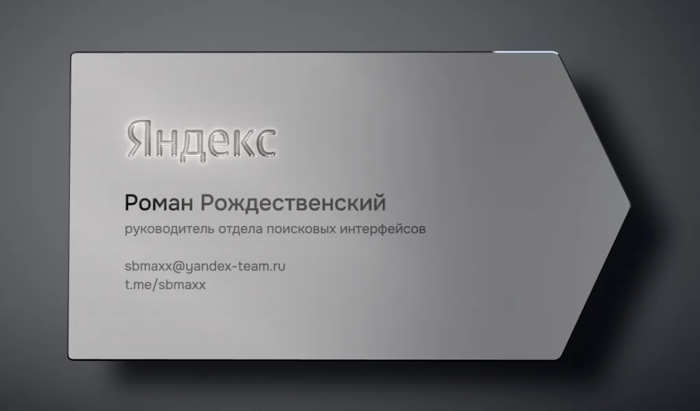
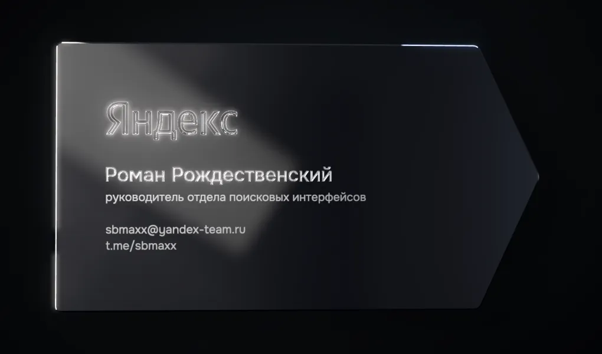
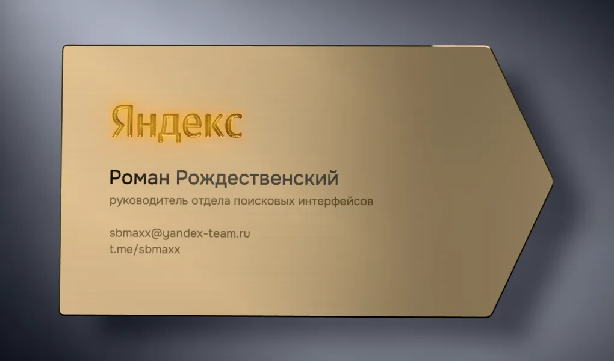
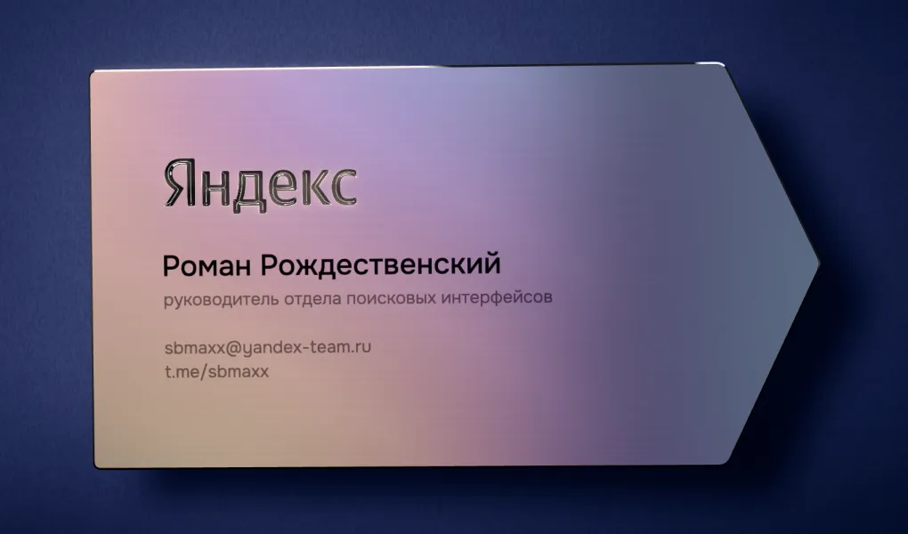

Четыре металла. Одна студия.
Процедурная студия со световыми панелями, HDR и свечение бликов, анизотропная шлифовка, алмазная фаска по контуру. Наклоните телефон — отражения поедут по металлу.

01 — Steel
Продольная шлифовка · алмазная V-резка · чёрная эмаль

02 — Noir
Чёрный PVD · лазер до голой стали · зеркальная фаска

03 — Champagne
Шлифованное золото · зеркальная V-резка · чёрная эмаль

04 — Aurora
Анодированный титан · интерференция · лазерный отжиг
V-резка
Логотип вырезан двумя полированными гранями. Одна ловит свет, другая уходит в тень — буквы читаются объёмом, а не краской.
Эмаль и лазер
Имя — выемка, залитая полуглянцевой эмалью. Контакты — лазерная маркировка: тёмный отжиг на металле или снятое покрытие на PVD.
Сравнение
На стенде можно переключить логотип на углублённый или выпуклый, остановить свет в нужной точке и подобрать экспозицию.